34 Chapter 34 — The Book as a System: How to Use It (Human + Agent)
The reader path, the agent path, the chapter dependency graph, the dual-sport navigation map, the reproduction contract, and the update channel
34.1 This Book Has Three Front Doors
Not every reader is an engineer. The book is organized so each role takes a different path through the same evidence: the coach, the analyst, and the engineer. Each path is a sequence of chapters with a concrete capability at the end — and the guarantee that every claim on the path resolves to a runnable lab. Everything here is measured (the C32 runner's pass table, the claims-register audit) or source-backed (the dossier's compiled references); the paths are the book's own design, not an external authority.
A pickleball coach enters through C03 (rules as predicates) and C28 (the live cockpit). She leaves able to read the third-shot-drop HUD numbers, ask for the right kitchen-pressure clip, and prescribe one constrained drill. A rugby league analyst enters through C12 (broadcast chaos) and C14 (multicamera line calls). He leaves able to ingest a PTB-heavy set, produce an honest retreat-compliance report, and run the claims check before the Monday review. The engineer must traverse the full pipeline, but even the engineer should know which door to open first, and which chapters can be read in parallel.
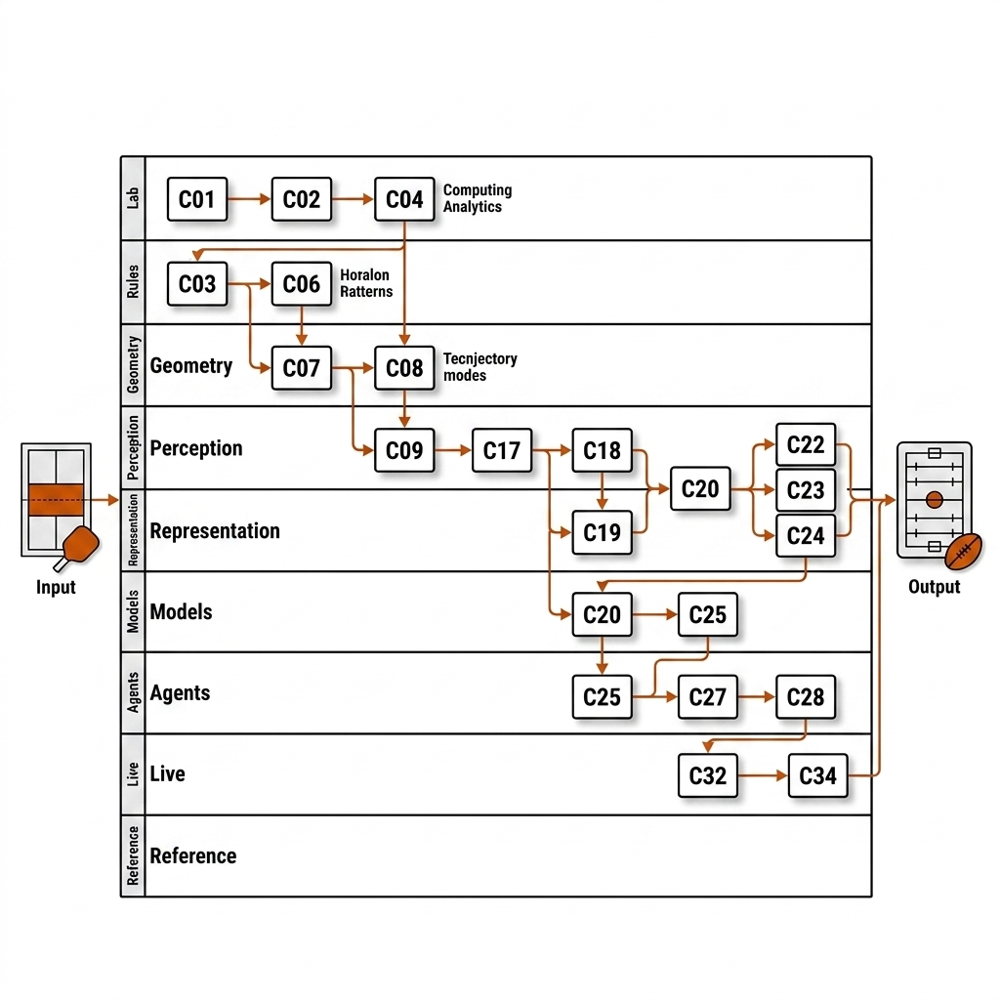
34.1b The Chapter Dependency Graph
The book is not a flat list. It is a source-backed pipeline where later chapters consume the machinery built in earlier ones. The first swimlane is the lab contract: C01 (Teamwork) and C02 (provenance) establish the evidence rules. The second swimlane is geometry and capture: C03 (rules), C04 (cameras), C06 (homography), and C07 (broadcast calibration) turn raw pixels into court-meter coordinates. The third swimlane is perception: C08 (detection), C09 (tracking), C10-C16 (pose, ball, segmentation, audio, video, multiview) produce the actor and object tracks. The fourth swimlane is representation: C17 (event schema), C18 (annotation), C19 (automatic eventing) turn tracks into structured rows. The fifth is models: C20 (statistics), C21 (ratings), C22 (expected value), C23 (tactical ML), C24 (simulation). The sixth is agentic consumption: C25 (VLMs), C26 (narrative), C27 (harness). The seventh is live action: C28 (cockpit), C29 (practice), C30 (sensors), C31 (deployment). The reference chapters — C32 (lab), C33 (frontier), C34 (this chapter) — sit at the end because every other chapter depends on them.
The dependency graph is not identical for both sports. Pickleball, a fixed-camera clean baseline, can skip the broadcast-calibration lane on a first pass: a coach can read C03 → C06 → C08 → C09 → C17 and start producing PBN rows from a single tripod camera. Rugby league, a broadcast pan-tilt-zoom stress test, must read C07 (GMC and per-frame homography), C12 (field-sport scaling), and C14 (multicamera line calls) before the C17 schema is trustworthy. The shared spine — C01, C02, C04, C17, C20, C22, C27, C32 — is the contract both sports sign. The graph in Figure 34.1 encodes these prerequisites; if a reader jumps to C23 before C17, the tactical model will have no structured input, and the agent will hallucinate.
34.2 The Human Paths
The three human tracks are not reading lists; they are capability contracts. Each path ends with a single artifact the reader can produce. The coach produces a drill prescription. The analyst produces a one-page report with a claims check. The engineer produces a working pipeline with per-claim evidence. The tracks share the same evidence spine (clip_id, frame_idx, pts_s, world coordinates, event rows), but they differ in depth and tolerance for failure.
| Path | Chapters | Capability at the end | Pickleball evidence | Rugby league evidence |
|---|---|---|---|---|
| Coach (1 hour) | C01 (why), C03 (rules), C28 (what's live), C29 (practice), C34 (glossary) | Read the HUD numbers honestly, ask for the right clip, prescribe one constrained drill | Kitchen fault clip, third-shot drop success rate from C28 | Defensive line break count and 10m retreat compliance from the live cockpit |
| Analyst (one weekend) | C01-C05 (lab + data), C20 (stats), C26 (reporting), C32 (run everything) | Ingest a clip, produce an honest report, run the claims check | PBN rally report with HOTA and kitchen-fault counts | NRL 6-tackle set report with PTB speed, line break, and defensive shape metrics |
| Engineer (two weeks) | C03-C31 in wave order + C32 | A working pipeline with per-claim evidence and the Colab lanes identified | End-to-end pickleball video → PBN → dashboard on Apple Silicon | Broadcast rugby league tracking → eventing → EPV pipeline with calibrated homography |
The table is not a suggestion. A coach who reads C28 without C03 will misinterpret the kitchen fault alarm; the rules are the predicate that gives the HUD number meaning. An analyst who reads C20 without C02 will report a trend without knowing whether the clip is a golden fixture or an ad-hoc export; the provenance is what makes the statistic honest. An engineer who skips C32 will build a beautiful pipeline that fails the claims register on day one. The paths are designed to surface these failures early, before the reader has invested time in the wrong chapters.
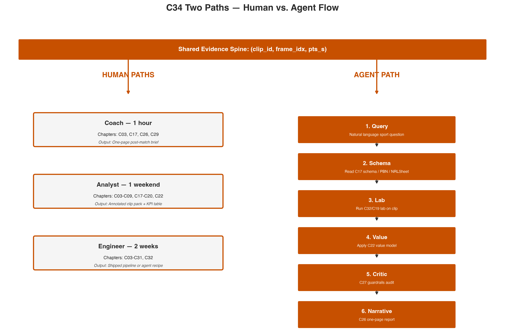
34.2b The Reader Path
The reader path is the detailed map a human follows. It is not a linear page order; it is a decision tree. At the first node, the reader asks: Do I need to produce something, or only consume something? If the answer is consume, the reader follows the coach or analyst track. If the answer is produce, the reader follows the engineer track. The second node asks: Which sport is my primary domain? Pickleball readers can delay the broadcast-calibration chapters (C07, C12) until they encounter a moving camera; rugby league readers must confront them immediately. The third node asks: Which evidence level do I need? A measured claim requires C32; a concept-transfer claim requires C33; a proposed idea requires C33 and an honest unknown label.
For a pickleball coach, the path is short: C01 (why the method matters), C03 (the NVZ predicate), C28 (what the live HUD shows), C29 (how to turn a number into a drill), and C34 (this glossary). For a rugby league coach, the equivalent path is C01, C03 (the rugby set-grammar predicates), C28 (the live defensive-shape HUD), C29 (the representative practice design), and C34. The analyst path is longer because it requires building the clip, not just reading it. The engineer path is longest because it requires building the machine that builds the clip. The reader path in Figure 34.3 shows these forks and the shared milestones.
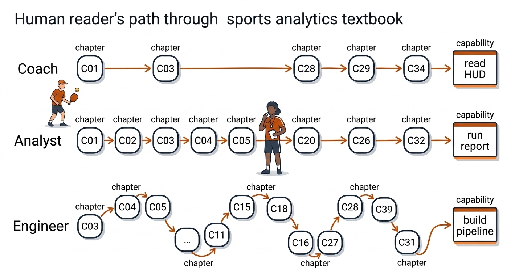
34.2c The Six Use-Paths
The three human tracks in 34.2 are roles; the six use-paths here are goals. Each use-path is a contract with the same five parts: the path (what question you arrive with), the chapters (the exact sequence), the expected skill gain (the artifact you can produce at the end), the figure (the map), and the payoff (who benefits). The paths are the book's own design; every claim they lean on is measured (a C32 lab artifact) or source-backed (a dossier reference), and where the skill gain is a practitioner projection rather than a measured result it is marked [verify].
Use-Path 1 — The Pickleball Practitioner (the full journey)
The path. A coach or serious player with a tripod camera and a doubles match recording who wants to go from raw video to a drill prescription without becoming an engineer. The chapters: C03 (the kitchen and double-bounce rules as executable predicates) → C08 (player and ball detection on the fixed-court baseline) → C19 (automatic eventing: tracks become PBN rows) → C22 (expected possession value: what a rally state is worth) → C28 (the live cockpit: reading the third-shot-drop HUD honestly) → C29 (turning the number into one constrained, representative drill). The expected skill gain [verify]: given a new match clip, produce a kitchen-pressure report (speed-up success rate, NVZ fault count, third-shot depth distribution) and prescribe one drill that targets the weakest link. The payoff: coaching — the practitioner stops arguing from memory and starts prescribing from evidence.
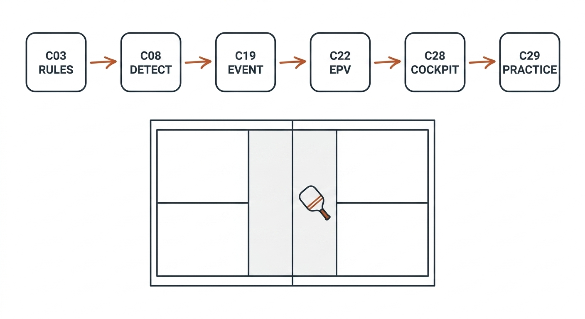
Use-Path 2 — The Rugby League Practitioner (the broadcast journey)
The path. A club analyst with broadcast footage — panning, zooming, occluding — who needs an honest Monday review. The chapters: C03 (the set-grammar predicates: six tackles, PTB, 10m retreat) → C07 (broadcast calibration: GMC and per-frame homography, the chapter that makes pitch-meters possible at all) → C12 (field-sport detection and tracking at scale) → C14 (multicamera line calls, and why a single camera never calls one) → C22 (expected value across the set) → C28 (the live defensive-shape cockpit). The expected skill gain [verify]: ingest one PTB-heavy broadcast clip and produce a retreat-compliance report, a line-break count with clip-level evidence, and a PTB-speed distribution — each number traceable to a frame. The payoff: analysis — the review meeting argues about tactics, not about whether the numbers are real.
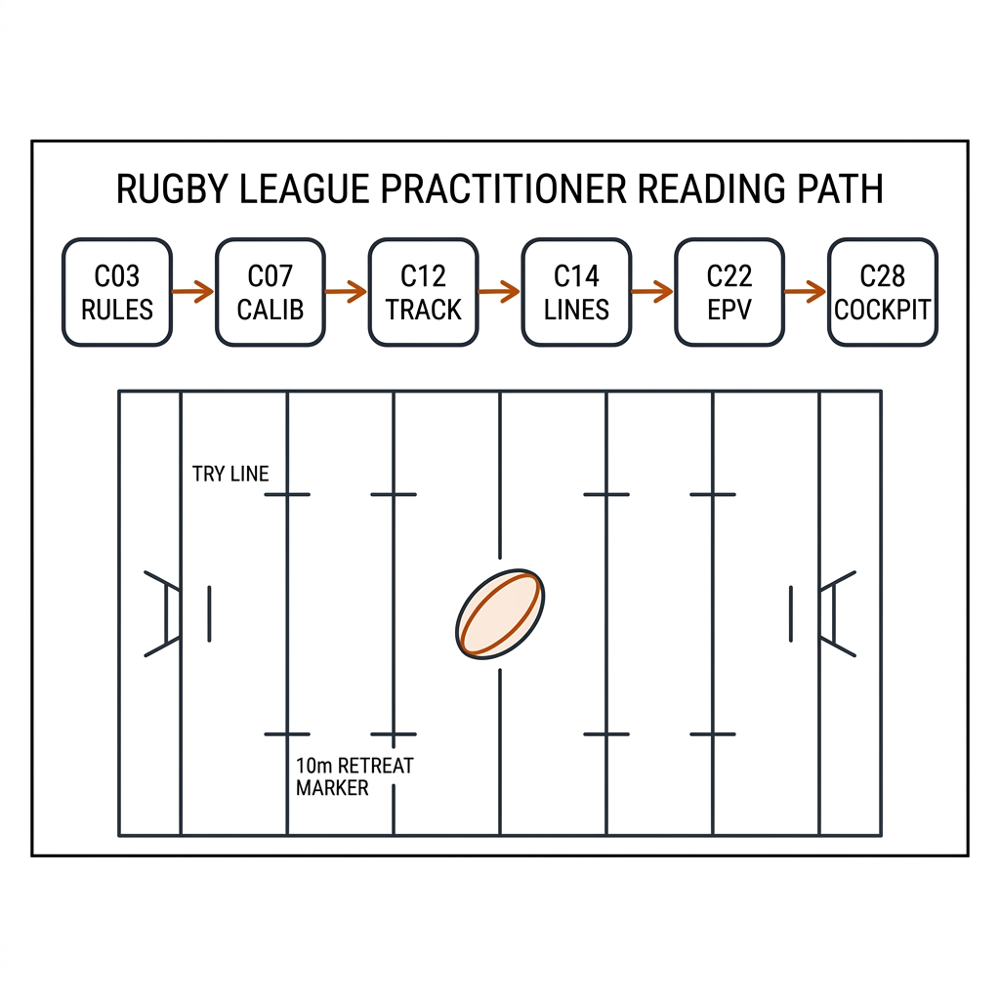
Use-Path 3 — The Agent (expanded)
The path. A software agent handed this book as a spec — the Teamwork loop from the research brief made executable. The chapters: C17 (the schema first, never the prose: the 31-field PBN row and the NRLSheet set row define what the agent may write) → C32 (the labs: the only ground truth the agent may cite) → the claims register (the 24-claim audit the agent must pass before it speaks) → C27 (the adversarial critic: falsifies detections, flags hallucinated serves and impossible velocities, forces unknown where the artifact is missing) → C34 (this chapter: the briefing, the hands-off contract, the human gate). The loop is the brief's own: hypothesis generation (divergence) → adversarial critique (falsification) → oracle execution (verification against the lab) → synthesis (recombination) — source-backed (Teamwork, Google Antigravity, 2026-08-27). The expected skill gain [verify]: an agent that answers only from artifacts, declines line calls from a single camera, and routes every recommendation through the critic before the human gate. The payoff: safety — the agent becomes a research partner instead of a hallucination amplifier.
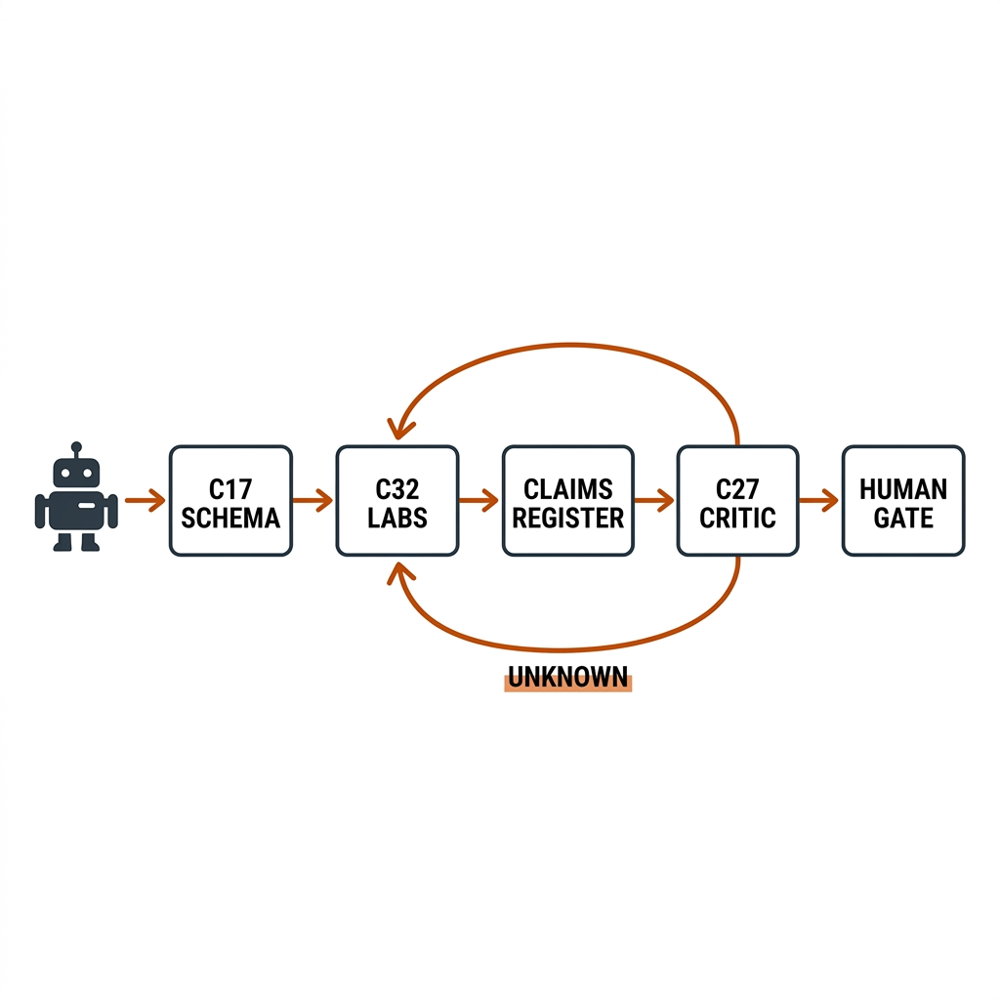
Use-Path 4 — The Researcher (papers to experiments)
The path. A sports scientist or graduate student who wants to stand on the book's evidence, not just read it. The chapters: the references index (34.6: every source with URL, DOI, and verified date) → C02 (provenance: what makes a claim auditable) → C20 (the statistics discipline: CIs, calibration, Brier and ECE) → C24 (simulation: the counterfactual testbed) → C33 (the frontier: what is genuinely open) → a new experiment of the reader's own, filed through the C32 pattern. The expected skill gain [verify]: replicate one book experiment end-to-end, then extend it — a new fixture, a new sport, a new claim with its own metrics.json and claims-register row. The payoff: science — the book becomes a platform for the next paper, and the researcher's contribution enters through the same evidence gate as the author's.
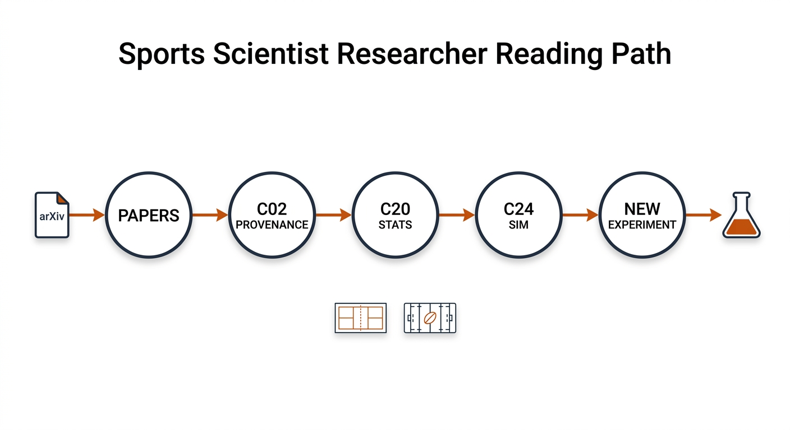
Use-Path 5 — The Skeptic (auditing the claims)
The path. A reader who does not trust the book — correctly — and wants to falsify it. The chapters: C34.8 (the self-audit: what is verified, what is pending, what was corrected — including the E12 transcript values and the E03 pose-speed correction) → C02 (the provenance contract every claim must satisfy) → the claims register (python lab/claims_register.py: the 24 load-bearing claims, each with an artifact path) → a C32 lab re-run of the skeptic's choosing. The expected skill gain: the ability to independently confirm or break any measurable claim in the book — this is measured, not projected, because the register is the same artifact the book's own CI runs; the pass bar is "24 claims, 0 problems." The payoff: trust — the skeptic who runs the audit and finds zero problems has earned the right to believe the rest, and the skeptic who finds a drift has earned a citation in the errata.
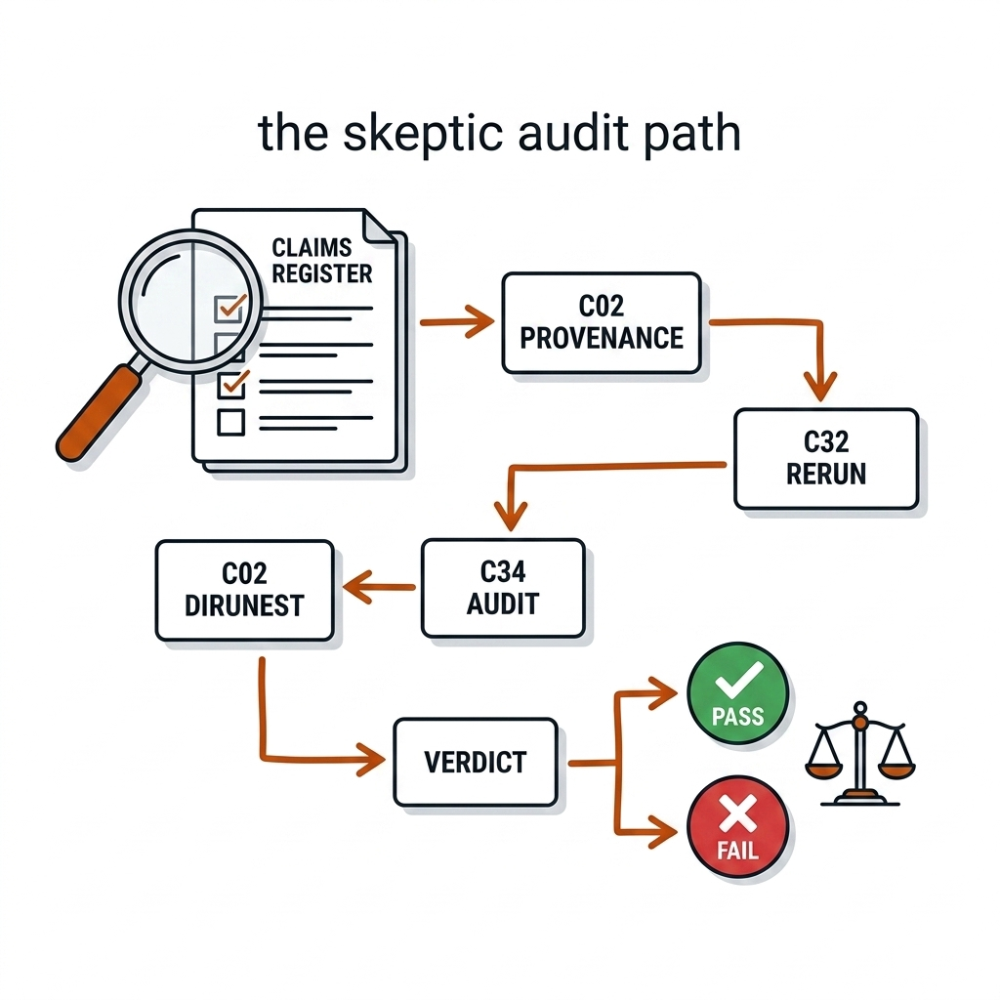
Use-Path 6 — The Builder (reproduce everything)
The path. An engineer who wants the whole machine, not a tour of it. The chapters: the reproduction contract (34.5b: clone, enter the lab, run the register, run everything) → C32 in wave order (capture, calibration, perception, representation, models, agents, live, deployment) → C31 (the deployment lane: what it takes to run this outside the lab). The expected skill gain [verify]: a working dual-sport pipeline on Apple Silicon — pickleball video → PBN rows → dashboard, rugby league broadcast → tracking → eventing → EPV — with per-claim evidence and the Colab lanes identified for the GPU-bound labs. The payoff: capability — the builder leaves with a system they own, a claims register they can extend, and the update channel (34.6b) as the contribution route back.
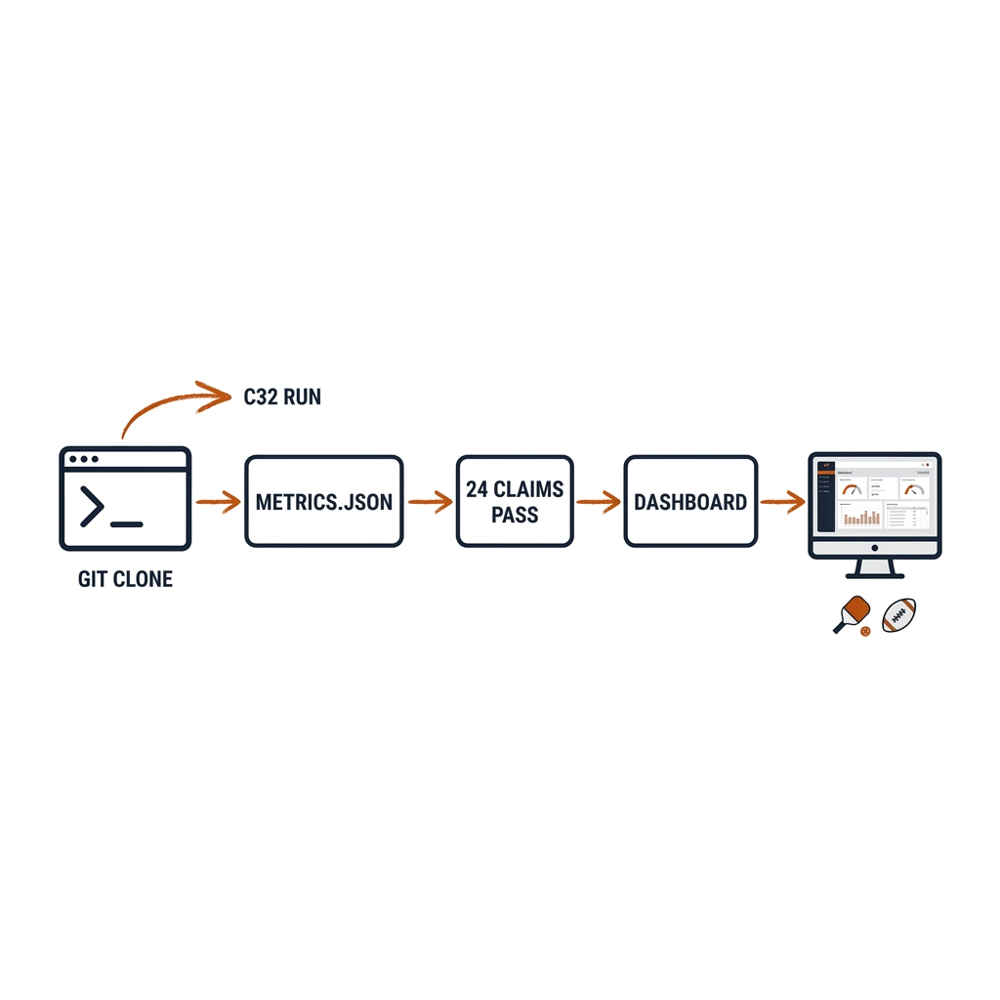
What the use-paths add to the pipeline. Paths 1 and 2 are the sport-specific instances of the reader path (34.2b); path 3 is the operational form of the agent path (34.3); paths 4, 5, and 6 are the three ways the book escapes its own pages — into new experiments (feeding C33), new audits (feeding 34.8), and new labs (feeding C32). Every path ends at the same gate: an artifact that the claims register can see.
34.3 The Agent Path
An agent consumes this book as a spec. The canonical sequence is: read C17 (schema) → run C32 (the labs) → query C05 (the one-spine) → answer with the C22 model → through the C27 critic and the human gate. The briefing: the agent is told the evidence contract (claims cite artifact values, never exceed them), the missing-data rule (unknown is a legal answer), and the no-medical-advice boundary. What it must NEVER claim: a value that exceeds its artifact, a line call from a single camera, a force from monocular video.
The agent path starts with the schema, not the prose. A human reads the chapter text; an agent reads the C17 PBN schema and the NRLSheet schema first. The schema tells the agent what a valid event row looks like, which fields are mandatory (clip_id, frame_idx, pts_s, player_id, event_type, world_x, world_y), and which relationships are foreign keys. For pickleball, the PBN schema defines the 31-field event row, the Contact Goal Tuple, and the kitchen fault predicate. For rugby league, the NRLSheet schema defines the 6-tackle set row, the PTB ruck event, and the line-break state transition. Without the schema, the agent cannot write a correct row or detect a malformed one.
After the schema, the agent runs the C32 labs. The labs are the ground truth the agent is allowed to cite. C32 contains a runner that executes every chapter's lab (run_everything.py) and a claims register (claims_register.py) that audits 24 load-bearing claims against their artifacts. The agent is not allowed to quote the prose; it must quote the artifact. If a human asks, "What is the E03 pose speed on the M4 Max?", the agent does not answer from memory; it runs python lab/w3_lab_pose.py and returns the value in metrics.json. If the lab is missing, the answer is unknown.
The C27 critic is the agent's safety belt. Before the agent emits a coaching recommendation, a tactical forecast, or a player rating, the critic checks the claim against the schema, the lab artifact, and the failure-mode list. The critic asks: Is the value within the artifact's range? Is the sport boundary respected? Is the causal language warranted? The critic is the adversarial role from the Teamwork multi-agent research loop (C01). It is the reason the agent path does not collapse into the single-agent agreement bias that produces hallucinated serves and imaginary line calls.
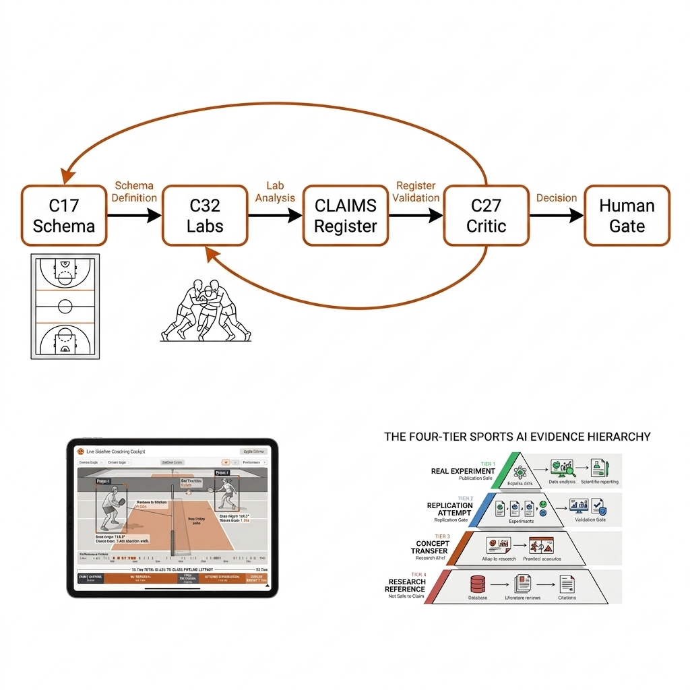
34.4 The Glossary (Selected)
| Term | Meaning |
|---|---|
| PBN | Pickleball Notation — the 31-field event-row contract (chapter 17) |
| NRLSheet | Rugby league event-row schema — the 6-tackle set representation (chapter 17) |
| NVZ / PBN | Non-volley zone (the kitchen, 2.13m) |
| HOTA / IDF1 / MOTA | Tracking metrics; HOTA decomposes into detection + association + localization |
| SPADL | Soccer Player Action Description Language — the explicit PBN ancestor |
| EPV / VAEP / xT | Expected possession value; action value (VAEP); expected threat (location value) |
| PTB | Play-the-ball — the rugby league restart |
| ACWR / CLA / RLD | Acute:chronic workload ratio (contextual, never causal); constraint-led approach; representative learning design |
| MCP / VLM / LLM | Model Context Protocol (the agent-tool standard); vision-language model; large language model |
| IRR / κ | Inter-rater reliability; Cohen's kappa (the label-agreement gate) |
| Brier / ECE | Calibration metrics — the honesty check on every probability machine |
The complete glossary (assembled from every chapter's domain terms, with the source chapter in each row) is the appendix; the table above is the load-bearing subset. Every acronym in the book resolves here or in the appendix — the rule is spell the first use, then the acronym, so a reader from either sport is never lost mid-sentence.
The rest of the acronym universe (by chapter): C01-C05: ROI, SHA-256, FOV, AV1, HEVC, DuckDB, EPTS; C06-C09: DLT, RANSAC, RMSE, GMC, ReID, MOT; C10-C16: mIoU, PQ, SMPL-X, CoM, Cd (drag coefficient), TDoA; C17-C19: SPADL, MOTChallenge, GS-HOTA, PRTreID, kappa, Landis-Koch; C20-C24: CI, ECE, Wilson, Brier, CV (cross-validation + computer vision — context disambiguates), do-calculus, Wasserstein; C25-C27: MCP, SDK, ADK, RAG, OTel, MoE, MAU; C28-C31: WebRTC, HUD, ACWR, sRPE, GDPR, PML (platform license), NIST AI RMF. The pattern across them: the acronym is load-bearing in exactly one chapter, and the chapter's first use spells it — the book's cross-referencing rule.
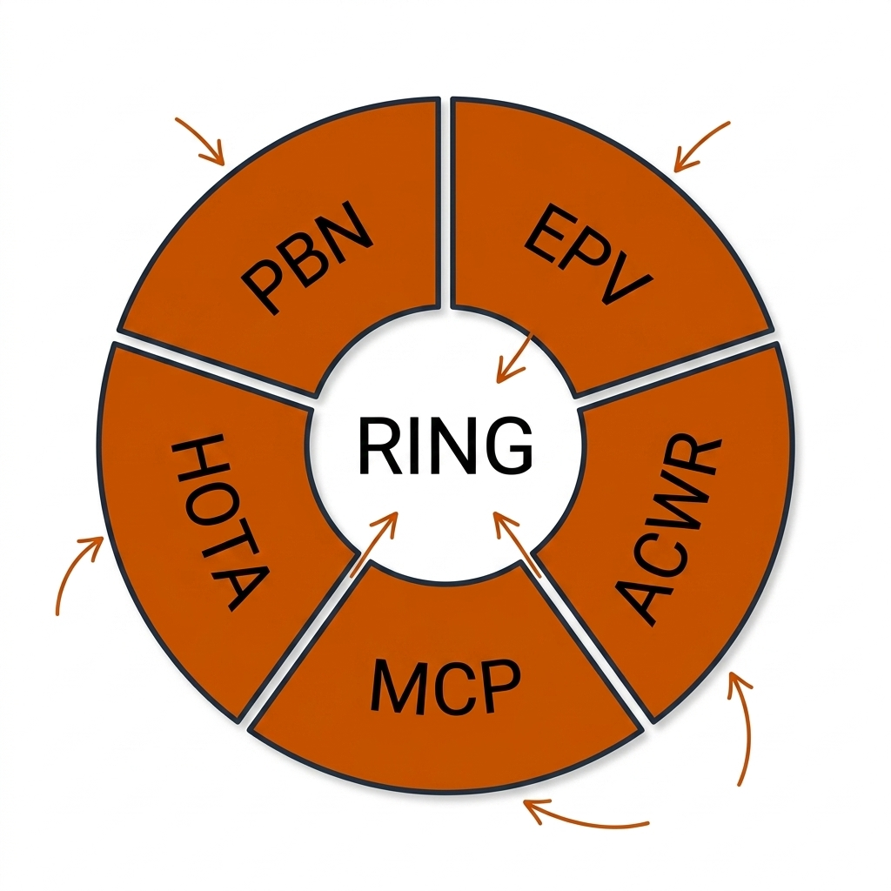
34.4b The Dual-Sport Navigation Map
The book is anchored in two sports for a reason: pickleball is the clean baseline, and rugby league is the broadcast chaos. The dual-sport navigation map is a decision aid that shows which chapters are sport-specific and which are shared. The shared spine is the evidence contract: C01, C02, C04, C17, C20, C22, C27, and C32. Every reader must read these. The pickleball track adds C03 (kitchen rules), C06 (static homography), C07a (static-court calibration), C08 (small-court detection), C12a (ball trajectory), and C28a (live kitchen HUD). The rugby league track adds C03b (set-grammar rules), C07b (broadcast GMC and per-frame homography), C12b (field-sport tracking at scale), C14 (multicamera line calls), and C28b (live defensive-line HUD).
The map is not a suggestion to read only one sport. It is a warning: a rugby league analyst who skips the pickleball baseline will miss the controlled experiment that proves the method works. A pickleball analyst who skips the rugby league chapters will miss the failure modes that only appear in broadcast panning, zoom, and occlusion. The two sports are each other's adversarial critic. The map in Figure 34.6 shows the tracks and the shared checkpoints. At each checkpoint, the reader must produce a sport-specific artifact — a PBN row for pickleball, an NRLSheet row for rugby league — before advancing.
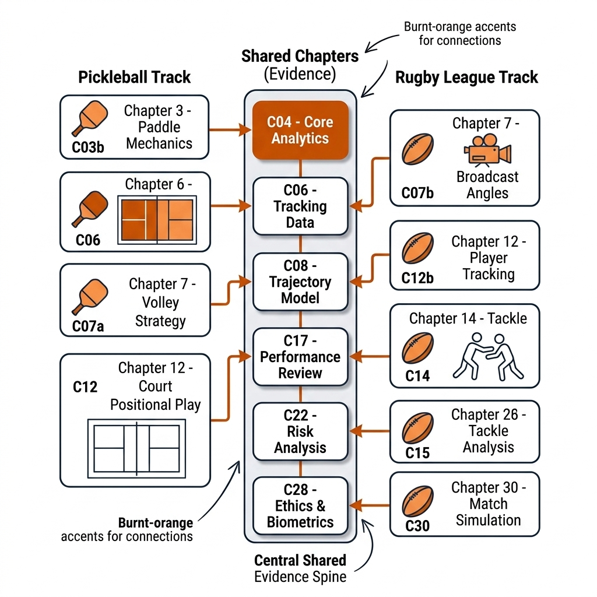
34.5 The Agent Briefing (The Hands-Off Contract)
An agent handed this book off receives the parol contract in one screen: the claim cites an artifact value, never exceeds it; unknown is a legal answer; a single camera never calls a line; monocular video never infers force; the human gate is before release. The operative mechanics: the agent reads the C17 schema before writing a row; runs the C32 labs before claiming; routes every claim through the C27 critic; and logs the trace (C25's observability lane). The failure modes the briefing names: the 84.6% singleton (n=1, sign-test needs the clip count), the "ball is in motion" hallucination (the live C25 catch), and the "reduced threat 65%" that belonged to a different experiment (the C24 v1 reconstruction).
The hands-off contract is sport-agnostic but sport-enforced. For pickleball, the agent must not call a kitchen foot fault from a single camera unless the C14 multicamera lab has been run. For rugby league, the agent must not infer a concussion-level force from a tackle video because the book contains no force sensor; the answer is unknown. The contract is what keeps the agent from becoming a liability.
34.5b The Reproduction Contract
The book makes a strong claim: every measurable statement can be reproduced. The reproduction contract is the exact set of commands that turns the prose into evidence. It is not a suggestion; it is a shell session. A reader who runs the contract on an Apple Silicon Mac should reach the same pass table as the book's own CI. The contract has four steps: clone the repository, enter the lab, run the claims register, and run the full experiment suite.
git clone https://github.com/mehran-mozaffari/agentic-sport-analysis.git
cd agentic-sport-analysis/lab
python claims_register.py
python run_everything.pyThe first command gives the reader the same code the author used. The second command moves into the lab directory where every chapter's runner lives. The third command audits the 24 claims in the register and prints a verdict for each. The fourth command runs the full wave order: capture, data engineering, calibration, detection, tracking, pose, ball, segmentation, video, audio, multiview, annotation, eventing, statistics, ratings, expected value, tactical ML, simulation, VLM, narrative, agent harness, live cockpit, practice design, sensors, and deployment. The output is a directory of metrics.json files and a top-level summary. The expected end state is 24 claims, 0 problems from the register and a green pass table from C32.
The reproduction contract is not a guarantee that every experiment will run on every machine. Some labs require a GPU for reasonable speed; some require a specific camera fixture; some require the NRL broadcast clip or the pb-003 pickleball dataset. The contract is honest about these boundaries. If a lab cannot run, the claims register marks the dependent claims as unknown rather than pass. The contract's purpose is to make the boundary visible, not to hide it.
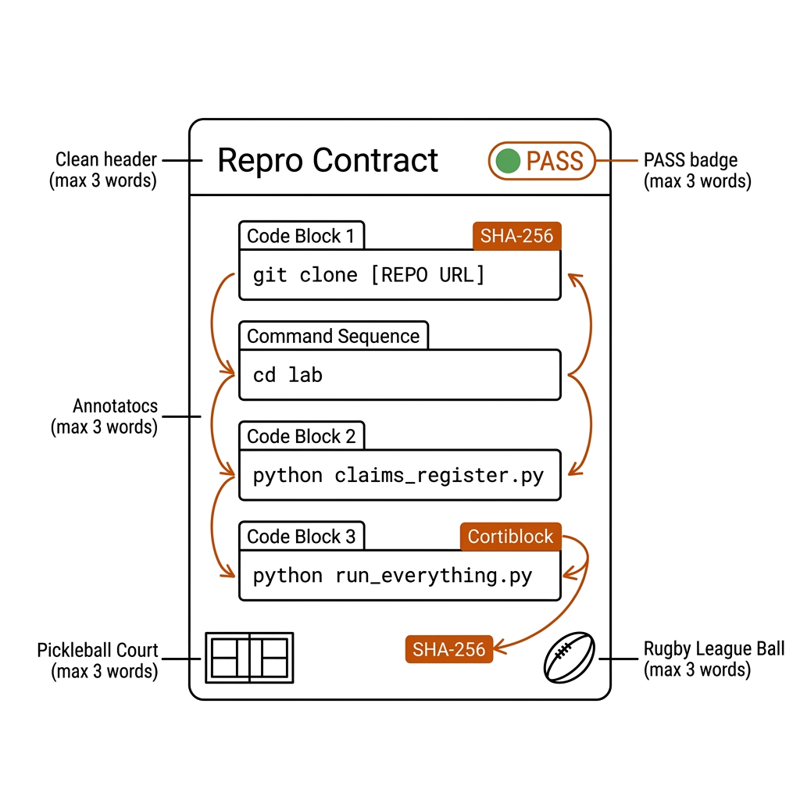
34.6 The References Index
Every chapter ends with Sources; the index consolidates them (URL + DOI + verified date, one source per line) as appendix-references.html. The rule: no reference in the book lacks a verified date — a paper cited without a check date is the kind of claim this book exists to prevent. The index is also machine-readable: each entry is a line with a stable identifier, a URL, a DOI or arXiv ID, and the date the author last verified that the link resolved. This makes the agent path possible: an agent can fetch the source, compare the verified date, and warn the human if the source has moved or changed.
For the sports covered here, the index includes USAP rulebook entries for pickleball, the NRL laws and IRL interpretations for rugby league, and the academic papers that underpin the methods (SPADL, VAEP, TacticAI, Teamwork). The verified date is not decorative; it is a source-backed evidence label that tells the reader whether the source is fresh enough to trust.
34.6b The Update Channel
The book is not a static artifact. It is a living system that updates through a closed loop: reader feedback → claims register → lab re-run → chapter patch → release. The update channel is how the book stays current when models, sensors, and rules change. A reader who finds a broken claim files an issue with the chapter, the claim ID, and the lab output. The maintainer re-runs the relevant C32 lab, updates the claim or the prose, and cuts a new release. The release notes are not marketing; they are a diff against the claims register.
The update channel has two cadences. The fast cadence is the claims register: a weekly cron runs python claims_register.py against the latest lab outputs and opens a ticket if any claim drifts. The slow cadence is the manuscript release: when a chapter's evidence changes, the chapter is patched, the dependency graph is checked, and a new HTML bundle is published. The book's version number is therefore a claim-register hash, not a marketing semver. Figure 34.8 shows the loop.
The update channel is also where new sports enter. A reader who adapts the method to basketball or netball can contribute a new C17 schema variant, a new C32 lab, and a new row in the dual-sport navigation map. The schema-first design means the book does not need a rewrite for each new sport; it needs a new schema, a new lab, and a new figure in the navigation map. The same update loop applies: the new lab runs, the claims register is updated, and the chapter is patched.
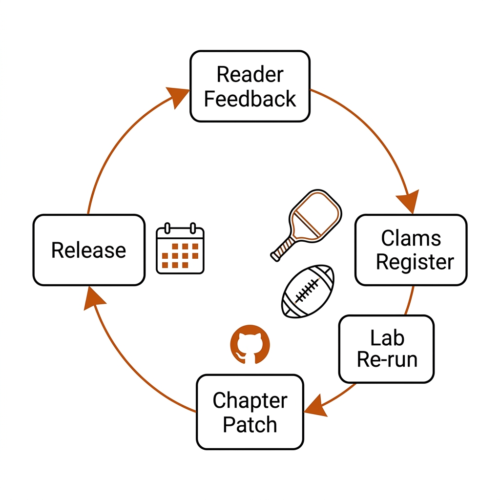
34.7 How to Contribute Back
- The dataset: the pickleball tracking/event labels (G0.5) — the first-of-kind public corpus; label the frames, publish the labels, respect the frames-not-redistributable boundary.
- The schema: NRLSheet (the rugby-by-tackle event row) — the open standard the field lacks.
- The sim: the rugby set simulator — no public one exists.
- The agent recipes: every chapter lab is agent-callable; contribute a new recipe and the runner picks it up.
Contributions are gated by the same evidence contract as the book. A new dataset must publish its labels and a metrics.json file. A new schema must be validated against at least two matches. A new simulator must reproduce a known fixture. A new agent recipe must pass the C27 critic before it is promoted. The contribution back is not a gift; it is an extension of the reproduction contract.
34.8 The Self-Audit
The audit is the discipline the book demands of itself: what is verified, what is pending, and what was corrected. The corrections this book made during its own build are the best evidence of the method: the E12 transcript values (v1 prose said 0.882 -> 0.303; the artifact says 0.64 -> 0.22); the E03 pose speed (39 fps in v1 prose; 82 fps in the artifact); the aerodynamics erratum (v1's "25 -> 11 m/s in 4m" was dimensionally inconsistent); the kloppy license (Apache note, corrected to BSD-3-Clause). Each correction is a case study in why the evidence contract exists — and the audit is runnable.
How to verify any claim in the book: find the chapter's artifact path → run the lab (C32) → check the claims register (lab/claims_register.py — the 24-claim audit). A claim that fails any step is either a bug (fix the lab) or a drift (fix the claim). The audit is the book's own discipline, and it is runnable: python lab/claims_register.py → "24 claims, 0 problems" is the pass bar.
The self-audit is also dual-sport. The pickleball claims (E01-E06) are checked against the pb-003 fixture and the kitchen-fault labels. The rugby league claims (E07-E08) are checked against the NRL broadcast clip and the manually annotated PTB and line-break events. The cross-sport claims — about the evidence contract, the schema, and the agent harness — are checked against both. A claim that is true for pickleball but false for rugby league is not a general claim; it is a concept transfer with a boundary note.
34.9 Sources
- The BookSystem dossier (
book-research/Research Briefs/2026-09-05-c34-book-system.md) — the full glossary + references index; the chapter-map figure. - Research Brief: Teamwork — Multi-Agent AI as a Sports Research Partner (
book-research/Research Briefs/2026-08-28-teamwork-ai-research-partner-brief.md) — the agent path and the C27 critic. - Technology Dossier: The 4-Rung Sports Agentic Ladder and Domain Architecture (
book-research/Technology Dossiers/The 4-Rung Sports Agentic Ladder and Domain Architecture.md) — the human path and the book-system framing. - Lab:
lab/run_everything.py;lab/claims_register.py. - Pickleball rule source: USAP rulebook (2024-01-01) — the kitchen predicate and the double-bounce rule.
- Rugby league rule source: NRL Laws of the Game and IRL interpretations (2024) — the 6-tackle set, play-the-ball, and 10m retreat.